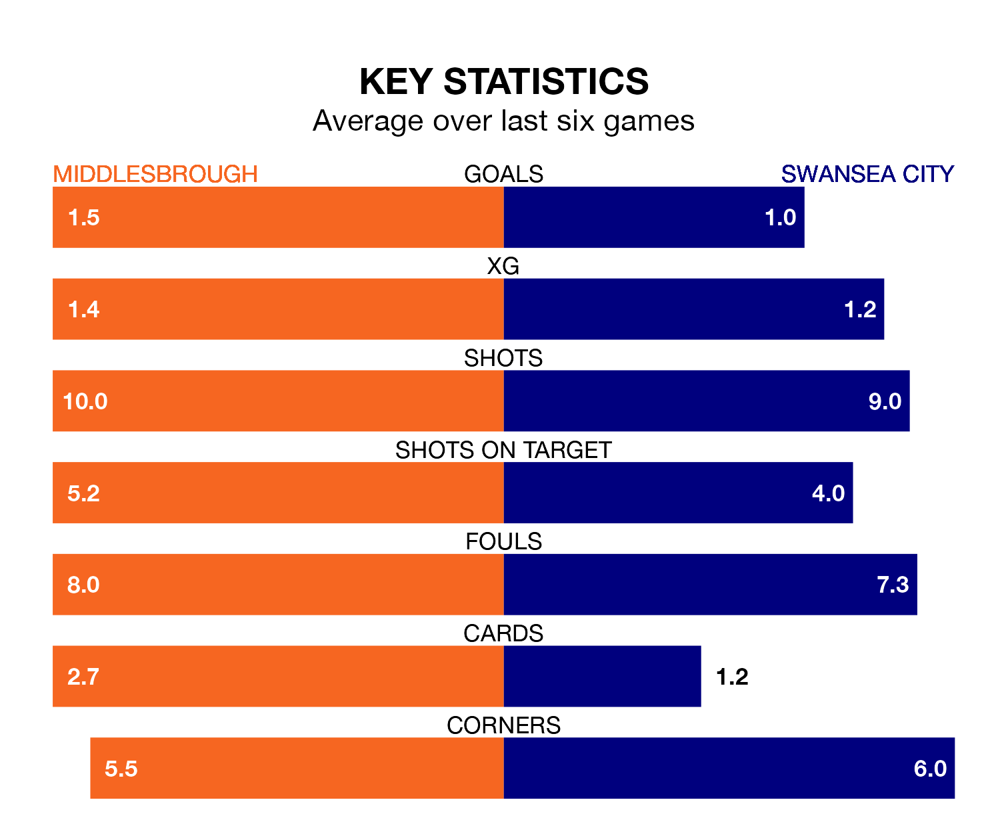

Middlesbrough face Swansea City on Saturday seeking to protect their long unbeaten run in EFL Championship.
The Boro are unbeaten in six, with four wins and two draws, ahead of the 3pm kick-off.
They face a Swansea team who have won two and drawn two over the same number of games.
In the last 10 years, Middlesbrough and Swansea have played each other on 13 occasions. Middlesbrough won six of them, Swansea four, and they drew three times.
On average, the Boro scored 1.3 goals and the Swans 1.2 in those matches.
Their last meeting was on December 16, when Middlesbrough won 2-1 away.
With 49 goals in 40 games so far this season, Swansea are scoring at below the league average rate with 1.2 goals per game. And they are conceding more than average, letting in 60 goals at a rate of 1.5 per game.
Middlesbrough, meanwhile, are average scorers, with 1.4 goals per game. They have conceded 1.3 goals per game.
The Boro are 10th in the table after 40 games, of which they have won 17 and drawn seven, earning 58 points.
City are five places behind the hosts in 15th, with 12 wins and 11 draws putting them on 47 points.
Middlesbrough's last match was on Monday, a 2-0 win against Sheffield Wednesday, with Isaiah Jones and Michael Ihiekwe (own goal) getting the goals for the Boro.
Swansea lost 1-0 against Queens Park Rangers last time out, also on Monday.
Saturday's match will be refereed by Rebecca Welch, who has taken charge of 10 EFL Championship games so far this season, issuing one red card and booking 46 players. He has not awarded any penalties.
The last Middlesbrough game Welch refereed was a 1-0 home win against Birmingham City on October 21. His last Swansea match was their 2-1 win at home against Blackburn Rovers on March 2.
Updated: 16:41 (UTC), 04/04/24